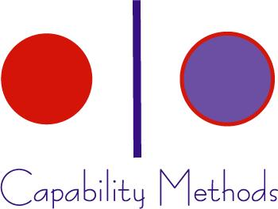

<!DOCTYPE html>
<html lang="en">
<head>
<meta charset="UTF-8">
<meta name="viewport" content="width=device-width, initial-scale=1.0">
<title>Operations Maturity Assessment | Capability Methods</title>
<style>
  *, *::before, *::after { box-sizing: border-box; margin: 0; padding: 0; }

  body {
    font-family: -apple-system, BlinkMacSystemFont, 'Segoe UI', Roboto, sans-serif;
    background: #f4f6fa;
    color: #1a2744;
    min-height: 100vh;
    display: flex;
    align-items: center;
    justify-content: center;
    padding: 24px 16px;
  }

  .card {
    background: #ffffff;
    border-radius: 16px;
    box-shadow: 0 4px 32px rgba(26, 39, 68, 0.12);
    max-width: 680px;
    width: 100%;
    overflow: hidden;
  }

  .logo-strip {
    background: #ffffff;
    padding: 18px 40px;
    border-bottom: 1px solid #e8ecf4;
  }

  .logo-strip img {
    height: 56px;
    width: auto;
    display: block;
  }

  .card-header {
    background: #1a2744;
    padding: 24px 40px 22px;
    color: #fff;
  }

  .card-header h1 {
    font-size: 24px;
    font-weight: 700;
    line-height: 1.3;
    margin-bottom: 6px;
  }

  .card-header p {
    font-size: 15px;
    color: #a8b8d8;
    line-height: 1.5;
  }

  .progress-bar-wrap {
    background: #e8ecf4;
    height: 5px;
  }

  .progress-bar {
    background: #f5a623;
    height: 5px;
    transition: width 0.3s ease;
  }

  .card-body {
    padding: 36px 40px 32px;
  }

  /* Welcome screen */
  .welcome-title {
    font-size: 22px;
    font-weight: 700;
    color: #1a2744;
    margin-bottom: 12px;
  }

  .welcome-desc {
    font-size: 15px;
    color: #4a5878;
    line-height: 1.7;
    margin-bottom: 20px;
  }

  .meta-chips {
    display: flex;
    gap: 10px;
    flex-wrap: wrap;
    margin-bottom: 28px;
  }

  .chip {
    background: #eef1fa;
    color: #1a2744;
    font-size: 13px;
    font-weight: 500;
    padding: 6px 14px;
    border-radius: 20px;
  }

  /* Question screen */
  .dimension-label {
    font-size: 12px;
    font-weight: 700;
    letter-spacing: 0.08em;
    text-transform: uppercase;
    color: #f5a623;
    margin-bottom: 10px;
  }

  .question-text {
    font-size: 20px;
    font-weight: 700;
    color: #1a2744;
    line-height: 1.4;
    margin-bottom: 24px;
  }

  .options {
    display: flex;
    flex-direction: column;
    gap: 10px;
    margin-bottom: 28px;
  }

  .option {
    display: flex;
    align-items: flex-start;
    gap: 14px;
    border: 2px solid #dde3f0;
    border-radius: 10px;
    padding: 14px 16px;
    cursor: pointer;
    transition: border-color 0.15s, background 0.15s;
    text-align: left;
    background: #fff;
  }

  .option:hover {
    border-color: #1a2744;
    background: #f8f9fc;
  }

  .option.selected {
    border-color: #1a2744;
    background: #eef1fa;
  }

  .option-dot {
    width: 20px;
    height: 20px;
    min-width: 20px;
    border-radius: 50%;
    border: 2px solid #c0c9df;
    margin-top: 1px;
    transition: background 0.15s, border-color 0.15s;
    display: flex;
    align-items: center;
    justify-content: center;
  }

  .option.selected .option-dot {
    background: #1a2744;
    border-color: #1a2744;
  }

  .option.selected .option-dot::after {
    content: '';
    width: 6px;
    height: 6px;
    background: #fff;
    border-radius: 50%;
    display: block;
  }

  .option-text {
    font-size: 15px;
    color: #1a2744;
    line-height: 1.5;
  }

  /* Navigation */
  .nav {
    display: flex;
    gap: 12px;
    align-items: center;
  }

  .btn {
    padding: 13px 28px;
    border-radius: 8px;
    font-size: 15px;
    font-weight: 600;
    cursor: pointer;
    border: none;
    transition: opacity 0.15s, transform 0.1s;
  }

  .btn:active { transform: scale(0.97); }

  .btn-primary {
    background: #1a2744;
    color: #fff;
    flex: 1;
  }

  .btn-primary:hover { opacity: 0.88; }

  .btn-primary:disabled {
    opacity: 0.4;
    cursor: not-allowed;
    transform: none;
  }

  .btn-secondary {
    background: #eef1fa;
    color: #1a2744;
    padding: 13px 20px;
  }

  .btn-secondary:hover { background: #dde3f0; }

  .btn-cta {
    background: #f5a623;
    color: #1a2744;
    padding: 16px 32px;
    font-size: 16px;
    border-radius: 8px;
    display: inline-block;
    text-decoration: none;
    font-weight: 600;
    cursor: pointer;
    border: none;
    transition: opacity 0.15s;
  }

  .btn-cta:hover { opacity: 0.9; }

  /* Result screen */
  .result-badge {
    display: inline-flex;
    align-items: center;
    gap: 8px;
    background: #eef1fa;
    border-radius: 24px;
    padding: 8px 18px;
    margin-bottom: 20px;
  }

  .result-badge .level-dot {
    width: 10px;
    height: 10px;
    border-radius: 50%;
  }

  .result-badge .level-name {
    font-size: 13px;
    font-weight: 700;
    letter-spacing: 0.05em;
    text-transform: uppercase;
    color: #1a2744;
  }

  .result-score {
    font-size: 48px;
    font-weight: 800;
    color: #1a2744;
    line-height: 1;
    margin-bottom: 4px;
  }

  .result-score-label {
    font-size: 13px;
    color: #7a8aaa;
    margin-bottom: 18px;
  }

  .result-desc {
    font-size: 16px;
    color: #4a5878;
    line-height: 1.7;
    margin-bottom: 24px;
  }

  .result-services {
    background: #f4f6fa;
    border-radius: 10px;
    padding: 18px 20px;
    margin-bottom: 28px;
  }

  .result-services-label {
    font-size: 12px;
    font-weight: 700;
    text-transform: uppercase;
    letter-spacing: 0.08em;
    color: #7a8aaa;
    margin-bottom: 10px;
  }

  .service-list {
    list-style: none;
    display: flex;
    flex-direction: column;
    gap: 8px;
  }

  .service-list li {
    display: flex;
    align-items: center;
    gap: 10px;
    font-size: 15px;
    font-weight: 600;
    color: #1a2744;
  }

  .service-list li::before {
    content: '';
    display: block;
    width: 8px;
    height: 8px;
    min-width: 8px;
    background: #f5a623;
    border-radius: 50%;
  }

  .result-cta-wrap {
    display: flex;
    gap: 12px;
    flex-wrap: wrap;
    align-items: center;
  }

  .btn-retake {
    background: none;
    border: 2px solid #dde3f0;
    color: #4a5878;
    padding: 14px 20px;
    border-radius: 8px;
    font-size: 14px;
    font-weight: 600;
    cursor: pointer;
    transition: border-color 0.15s;
  }

  .btn-retake:hover { border-color: #1a2744; color: #1a2744; }

  .q-counter {
    font-size: 13px;
    color: #7a8aaa;
    margin-left: auto;
  }

  @media (max-width: 520px) {
    .logo-strip { padding: 14px 20px; }
    .card-header, .card-body { padding: 20px 20px; }
    .card-header h1 { font-size: 20px; }
    .question-text { font-size: 17px; }
    .result-score { font-size: 40px; }
    .btn-cta { width: 100%; text-align: center; }
  }
</style>
</head>
<body>

<div class="card" id="app">
  <!-- Dynamically rendered by JS -->
</div>

<script>
const LOGO_HTML = `<div class="logo-strip"></div>`;

const QUESTIONS = [
  // Dimension 1: Process Maturity
  {
    dimension: "Process Maturity",
    text: "How are your core business processes documented?",
    options: [
      "They exist mostly in people's heads — not written down anywhere.",
      "Some key steps are documented informally, but it's inconsistent.",
      "Most processes are documented and shared, though not always followed.",
      "Processes are fully documented, version-controlled, and regularly reviewed."
    ]
  },
  {
    dimension: "Process Maturity",
    text: "When a process breaks down or causes a problem, how does your team respond?",
    options: [
      "It's mostly reactive — we fix the immediate issue and move on.",
      "Someone investigates the cause, but there's no formal process for it.",
      "We typically document what went wrong and make adjustments.",
      "We follow a structured root-cause analysis and update our processes accordingly."
    ]
  },
  {
    dimension: "Process Maturity",
    text: "How frequently are your operational processes reviewed and improved?",
    options: [
      "Rarely or never — we use the same approach unless something breaks.",
      "Occasionally, usually when a pain point becomes too big to ignore.",
      "Annually or when we hit a growth milestone.",
      "On a regular cadence (quarterly or more often) with clear ownership."
    ]
  },
  // Dimension 2: CRM & Technology
  {
    dimension: "CRM & Technology Adoption",
    text: "How do you currently manage customer relationships and your sales pipeline?",
    options: [
      "Spreadsheets, email threads, or nothing consistent.",
      "We use a basic CRM but only a fraction of the team uses it regularly.",
      "We have a CRM in place and most of the team logs activity in it.",
      "Our CRM is the single source of truth — fully adopted and automated."
    ]
  },
  {
    dimension: "CRM & Technology Adoption",
    text: "How well integrated are your core business tools (CRM, invoicing, support, marketing, etc.)?",
    options: [
      "They're siloed — we manually copy data between systems.",
      "A few systems are connected but most are separate.",
      "Many tools are integrated; some manual steps still remain.",
      "Our stack is fully integrated — data flows automatically across systems."
    ]
  },
  {
    dimension: "CRM & Technology Adoption",
    text: "How effectively is your team actually using the technology you've invested in?",
    options: [
      "Most tools are underused — people default to email and spreadsheets.",
      "Adoption is mixed — some team members use tools well, others don't.",
      "Most people use the tools, though not always at their full potential.",
      "High adoption across the board; we actively train and optimize usage."
    ]
  },
  // Dimension 3: AI & Data Readiness
  {
    dimension: "AI & Data Readiness",
    text: "How do you use data to make business decisions?",
    options: [
      "Decisions are mostly based on gut feel and experience.",
      "We look at data occasionally but don't have a consistent process.",
      "We have dashboards and use data regularly, though not systematically.",
      "Data drives our decisions — we have clear KPIs, reports, and regular reviews."
    ]
  },
  {
    dimension: "AI & Data Readiness",
    text: "What level of automation or AI does your business currently use?",
    options: [
      "Little to none — most tasks are done manually.",
      "We use basic automation (email sequences, simple workflows) in one or two areas.",
      "Several workflows are automated; we're beginning to explore AI tools.",
      "AI and automation are embedded across operations, customer management, or delivery."
    ]
  },
  {
    dimension: "AI & Data Readiness",
    text: "How would you describe the state of your business data?",
    options: [
      "It's scattered, duplicated, or hard to access when needed.",
      "It's in multiple places and sometimes inconsistent.",
      "Mostly clean and organized, though some gaps exist.",
      "Centralized, clean, and readily available for analysis or automation."
    ]
  },
  // Dimension 4: Operational Scalability
  {
    dimension: "Operational Scalability",
    text: "How well can your operations scale without requiring significant new headcount?",
    options: [
      "Every new client or project requires adding people.",
      "Some capacity to scale, but we hit bottlenecks quickly.",
      "We can handle moderate growth; major scaling still requires hiring.",
      "Our operations are designed to scale — systems and automation carry the load."
    ]
  },
  {
    dimension: "Operational Scalability",
    text: "How much of leadership's time is spent on operational tasks vs. strategic work?",
    options: [
      "Leadership is consumed by day-to-day operations — little time for strategy.",
      "A significant portion of leadership time is reactive and operational.",
      "Leadership is mostly in a strategic role, with some operational involvement.",
      "Leadership focuses on strategy; operations run largely independently."
    ]
  },
  {
    dimension: "Operational Scalability",
    text: "How quickly and smoothly can you onboard a new client or expand your service delivery?",
    options: [
      "It's chaotic — we recreate the process almost every time.",
      "We have some standard steps but it still takes significant effort.",
      "We have a playbook; onboarding is predictable with minor friction.",
      "Onboarding is systematized, fast, and consistently excellent."
    ]
  }
];

const RESULTS = [
  {
    min: 12, max: 22,
    level: "Emerging",
    color: "#e07b3a",
    description: "Your operations are largely manual and reactive. Processes are inconsistent, technology is underutilized, and growth creates friction. The good news: there's significant opportunity for improvement — and the right interventions now will build a foundation that scales.",
    services: ["Fractional COO", "Digital Operational Excellence"]
  },
  {
    min: 23, max: 33,
    level: "Developing",
    color: "#4a90d9",
    description: "You have the building blocks in place but they aren't fully connected or consistently used. With the right systems and structure, you can eliminate the recurring bottlenecks and position your business for sustainable growth.",
    services: ["Operations Modernization (CRM)", "Digital Operational Excellence"]
  },
  {
    min: 34, max: 44,
    level: "Optimizing",
    color: "#2eab7a",
    description: "Your operations are solid and you're running efficiently. The next step is harnessing data and AI to move from optimization to transformation — reducing manual effort further and unlocking insights that drive better decisions.",
    services: ["AI Advisory & Consultancy", "Operations Modernization"]
  },
  {
    min: 45, max: 48,
    level: "Leading",
    color: "#8a5cf5",
    description: "You're operating at a high level — your processes, technology, and data foundations are strong. Now is the time to leverage agentic AI and deep automation to create a genuine competitive advantage and scale without limits.",
    services: ["Agentic AI-Based Transformation"]
  }
];

let currentStep = -1; // -1 = welcome
let answers = new Array(QUESTIONS.length).fill(null);

function getResult(score) {
  return RESULTS.find(r => score >= r.min && score <= r.max) || RESULTS[RESULTS.length - 1];
}

function render() {
  const app = document.getElementById('app');
  if (currentStep === -1) {
    renderWelcome(app);
  } else if (currentStep < QUESTIONS.length) {
    renderQuestion(app, currentStep);
  } else {
    renderResult(app);
  }
}

function renderWelcome(app) {
  app.innerHTML = `
    ${LOGO_HTML}
    <div class="card-header">
      <h1>How Operationally Mature Is Your Business?</h1>
      <p>Take a 3-minute assessment to find out where you stand — and what to focus on next.</p>
    </div>
    <div class="progress-bar-wrap"><div class="progress-bar" style="width:0%"></div></div>
    <div class="card-body">
      <div class="welcome-title">Your free Operations Maturity Assessment</div>
      <div class="welcome-desc">
        Answer 12 questions across four dimensions — Process Maturity, Technology Adoption, AI Readiness, and Scalability. You'll receive a personalized maturity level and a recommendation for where to focus your energy.
      </div>
      <div class="meta-chips">
        <span class="chip">3 minutes</span>
        <span class="chip">12 questions</span>
        <span class="chip">Instant results</span>
      </div>
      <div class="nav">
        <button class="btn btn-primary" onclick="startAssessment()">Start Assessment &rarr;</button>
      </div>
    </div>
  `;
}

function renderQuestion(app, index) {
  const q = QUESTIONS[index];
  const progress = Math.round((index / QUESTIONS.length) * 100);
  const selected = answers[index];

  const optionsHTML = q.options.map((opt, i) => `
    <button class="option ${selected === i + 1 ? 'selected' : ''}" onclick="selectAnswer(${i + 1})">
      <span class="option-dot"></span>
      <span class="option-text">${opt}</span>
    </button>
  `).join('');

  app.innerHTML = `
    ${LOGO_HTML}
    <div class="card-header">
      <h1>Operations Maturity Assessment</h1>
    </div>
    <div class="progress-bar-wrap"><div class="progress-bar" style="width:${progress}%"></div></div>
    <div class="card-body">
      <div class="dimension-label">${q.dimension}</div>
      <div class="question-text">${q.text}</div>
      <div class="options">${optionsHTML}</div>
      <div class="nav">
        ${index > 0 ? `<button class="btn btn-secondary" onclick="prevQuestion()">&larr;</button>` : ''}
        <button class="btn btn-primary" onclick="nextQuestion()" ${selected === null ? 'disabled' : ''}>
          ${index < QUESTIONS.length - 1 ? 'Next &rarr;' : 'See My Results'}
        </button>
        <span class="q-counter">${index + 1} / ${QUESTIONS.length}</span>
      </div>
    </div>
  `;
}

function renderResult(app) {
  const score = answers.reduce((sum, val) => sum + (val || 0), 0);
  const result = getResult(score);
  const servicesHTML = result.services.map(s => `<li>${s}</li>`).join('');

  app.innerHTML = `
    ${LOGO_HTML}
    <div class="card-header">
      <h1>Your Assessment Results</h1>
      <p>Here's where your operations stand today.</p>
    </div>
    <div class="progress-bar-wrap"><div class="progress-bar" style="width:100%"></div></div>
    <div class="card-body">
      <div class="result-badge">
        <span class="level-dot" style="background:${result.color}"></span>
        <span class="level-name">${result.level}</span>
      </div>
      <div class="result-score">${score}<span style="font-size:24px;font-weight:500;color:#7a8aaa"> / 48</span></div>
      <div class="result-score-label">Your maturity score</div>
      <div class="result-desc">${result.description}</div>
      <div class="result-services">
        <div class="result-services-label">Recommended focus areas</div>
        <ul class="service-list">${servicesHTML}</ul>
      </div>
      <div class="result-cta-wrap">
        <a href="mailto:info@capabilitymethods.com" class="btn-cta">Book a Free Consultation</a>
        <button class="btn-retake" onclick="retake()">Retake Assessment</button>
      </div>
    </div>
  `;
}

function startAssessment() {
  currentStep = 0;
  render();
}

function selectAnswer(value) {
  answers[currentStep] = value;
  render();
}

function nextQuestion() {
  if (answers[currentStep] === null) return;
  currentStep++;
  render();
}

function prevQuestion() {
  if (currentStep > 0) {
    currentStep--;
    render();
  }
}

function retake() {
  currentStep = -1;
  answers = new Array(QUESTIONS.length).fill(null);
  render();
}

render();
</script>
</body>
</html>
